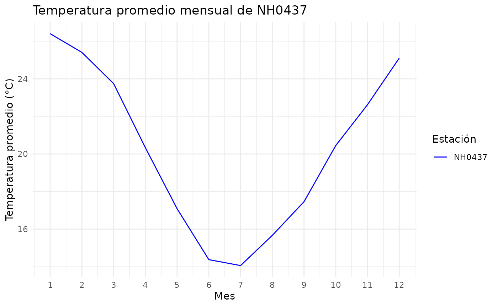

Introducción
El paquete estacionesINTA permite leer datos meteorológicos, resumir temperaturas por estación y graficar sus promedios mensuales.
En esta viñeta usamos los datos de la estación NH0437 incluidos en el paquete.
Explorar los datos
El conjunto estacion_nh0437 contiene registros entre el 1 de agosto de 1970 y el 27 de abril de 2023.
head(estacion_nh0437)
#> id fecha temperatura_abrigo_150cm temperatura_abrigo_150cm_maxima
#> 1 NH0437 1970-08-01 23.30 31.2
#> 2 NH0437 1970-08-02 26.55 32.1
#> 3 NH0437 1970-08-03 17.35 22.9
#> 4 NH0437 1970-08-04 11.05 11.9
#> 5 NH0437 1970-08-05 11.10 12.6
#> 6 NH0437 1970-08-06 13.55 15.1
#> temperatura_abrigo_150cm_minima temperatura_intemperie_5cm_minima
#> 1 15.4 14.2
#> 2 21.0 18.8
#> 3 11.8 14.1
#> 4 10.2 10.8
#> 5 9.6 9.7
#> 6 12.0 12.6
#> temperatura_intemperie_50cm_minima temperatura_suelo_5cm_media
#> 1 NA NA
#> 2 NA NA
#> 3 NA NA
#> 4 NA NA
#> 5 NA NA
#> 6 NA NA
#> temperatura_suelo_10cm_media temperatura_inte_5cm
#> 1 NA NA
#> 2 NA NA
#> 3 NA NA
#> 4 NA NA
#> 5 NA NA
#> 6 NA NA
#> temperatura_intemperie_150cm_minima humedad_suelo precipitacion_pluviometrica
#> 1 NA NA 0.0
#> 2 NA NA 0.0
#> 3 NA NA 31.0
#> 4 NA NA 39.5
#> 5 NA NA 0.0
#> 6 NA NA 3.4
#> granizo nieve heliofania_efectiva heliofania_relativa tesion_vapor_media
#> 1 0 0 9.3 87 21.1
#> 2 0 0 9.3 87 20.8
#> 3 0 0 0.0 0 14.8
#> 4 0 0 0.0 0 12.4
#> 5 0 0 0.2 2 13.3
#> 6 0 0 0.0 0 15.2
#> humedad_media humedad_media_8_14_20 rocio_medio duracion_follaje_mojado
#> 1 NA 70 18.4 NA
#> 2 NA 66 18.1 NA
#> 3 NA 94 12.8 NA
#> 4 NA 95 10.1 NA
#> 5 NA 97 11.2 NA
#> 6 NA 97 13.2 NA
#> velocidad_viento_200cm_media direccion_viento_200cm
#> 1 12.8 NA
#> 2 7.2 NA
#> 3 14.4 NA
#> 4 20.0 NA
#> 5 4.8 NA
#> 6 8.8 NA
#> velocidad_viento_1000cm_media direccion_viento_1000cm velocidad_viento_maxima
#> 1 16 <NA> NA
#> 2 9 <NA> NA
#> 3 18 <NA> NA
#> 4 25 <NA> NA
#> 5 6 <NA> NA
#> 6 11 <NA> NA
#> presion_media radiacion_global radiacion_neta evaporacion_tanque
#> 1 NA 14.8 NA NA
#> 2 NA 14.9 NA NA
#> 3 NA 4.1 NA NA
#> 4 NA 4.1 NA NA
#> 5 NA 4.4 NA NA
#> 6 NA 4.2 NA NA
#> evapotranspiracion_potencial profundidad_napa horas_frio unidad_frio
#> 1 3.1 NA 0 NA
#> 2 3.4 NA 0 NA
#> 3 2.0 NA 0 NA
#> 4 0.9 NA 0 NA
#> 5 0.6 NA 0 NA
#> 6 0.7 NA 0 NAResumir la temperatura
La función tabla_resumen_temperatura() calcula el promedio y el desvío estándar de la temperatura para cada estación.
tabla_resumen_temperatura(estacion_nh0437)
#> # A tibble: 2 × 3
#> id estadistico valor
#> <chr> <chr> <dbl>
#> 1 NH0437 promedio_temperatura 20.2
#> 2 NH0437 desvio_estandar 5.77Graficar la temperatura mensual
La función grafico_temperatura_mensual() calcula el promedio de temperatura para cada mes y estación. Los registros de un mismo mes de distintos años se resumen juntos.
grafico_temperatura_mensual(
estacion_nh0437,
colores = "blue",
titulo = "Temperatura promedio mensual de NH0437"
)
Leer otra estación
La función leer_estacion() recibe el código de una estación y la ruta donde se guardará su archivo. Si ese archivo ya existe, lo lee sin descargarlo nuevamente.
Por ejemplo:
otra_estacion <- leer_estacion(
id_estacion = "NH0437",
ruta = "NH0437.csv"
)